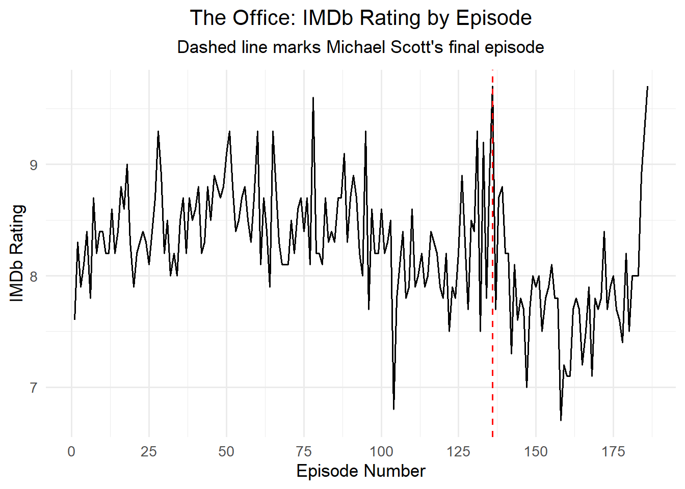
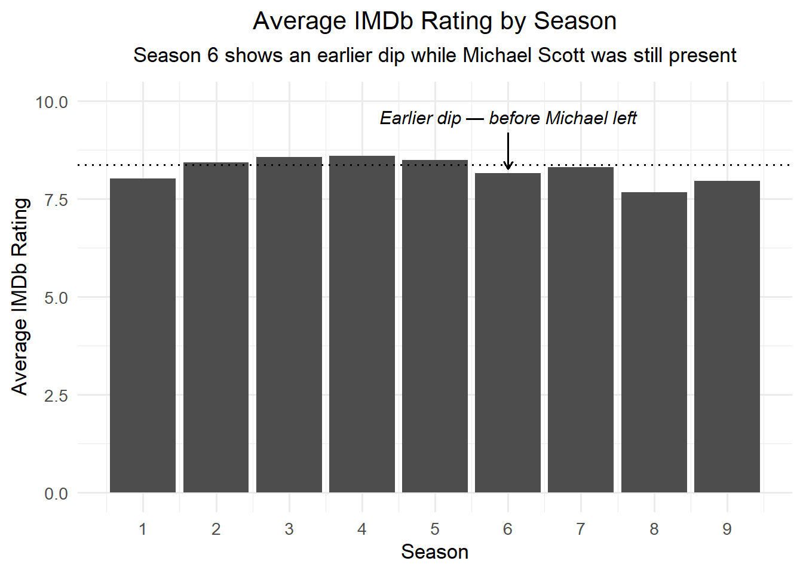
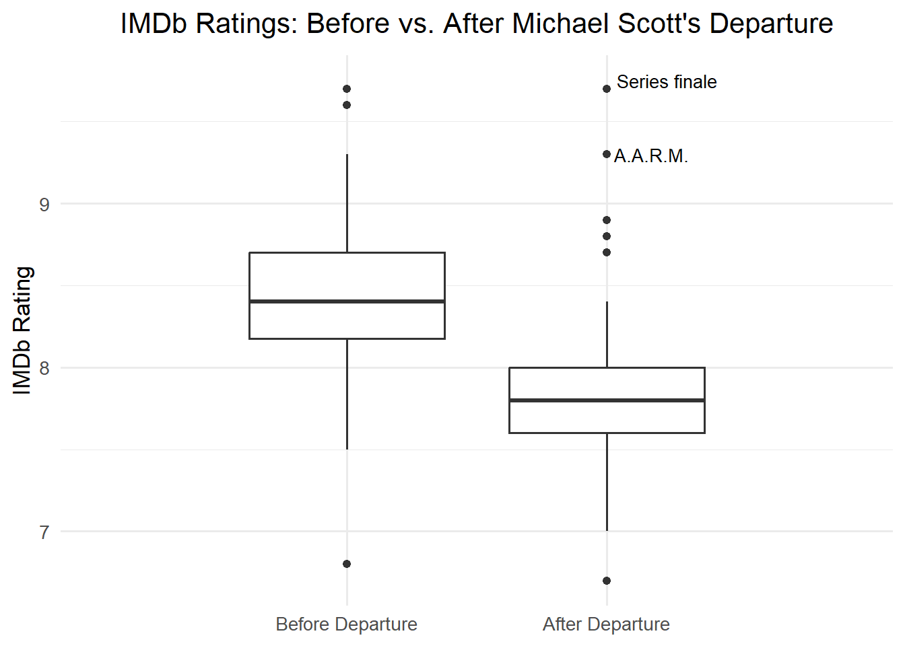
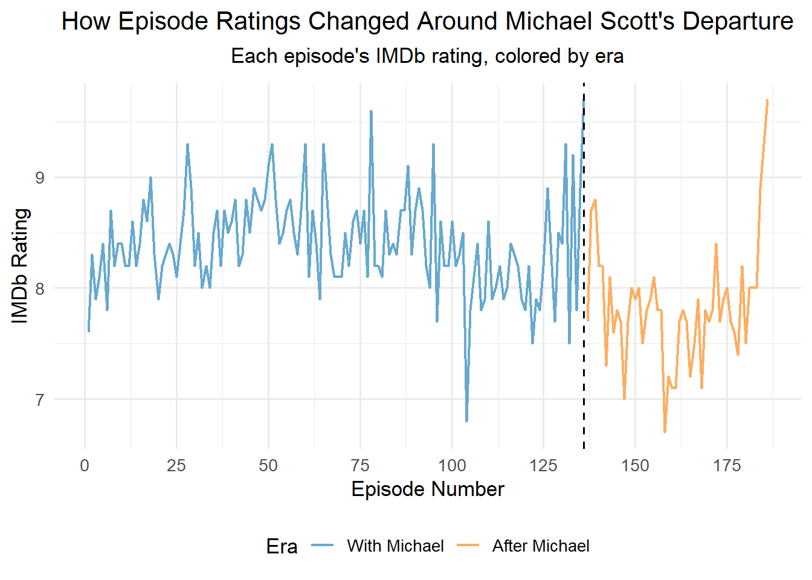
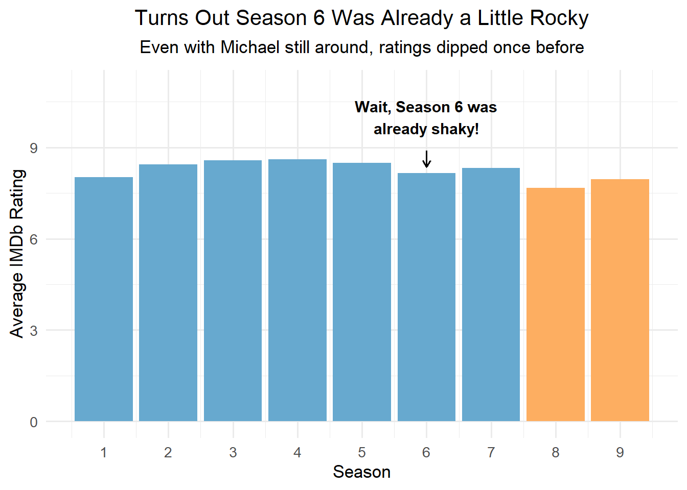
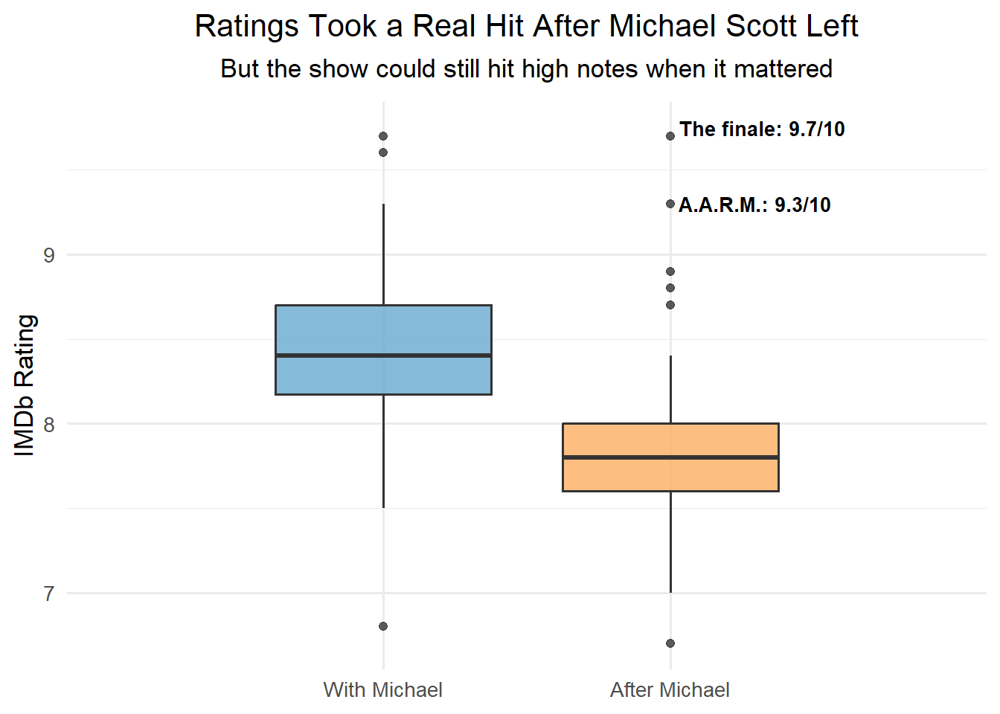

The Office: Did Ratings Decline After Michael Scott Left?
1. Story Summary
Fans often argue that The Office was never the same after Michael Scott left. But do the episode ratings actually support that claim?
This analysis examines how IMDb episode ratings changed across the series, particularly in the seasons following Michael’s departure. It explores whether the later seasons generally received lower ratings and whether the idea that The Office was consistently better with Michael Scott is supported by the data.
The results suggest that the story is not so straightforward. Although ratings generally declined in seasons 8 and 9, the show had experienced a dip before Michael’s departure, particularly in Season 6. This suggests that lower ratings were not unique to the later seasons. However, the decline following Season 7 was more pronounced, with the typical episode receiving a lower rating than in earlier seasons. Despite this, the show continued to produce highly rated episodes.
Overall, these findings challenge the idea that The Office was consistently well received before Michael left and universally disliked after his departure. While his departure coincided with a decline in episode ratings, the data cannot establish whether it was responsible for that change. Instead, the findings suggest that the show’s reception was more complicated than a simple divide between the seasons with and without Michael Scott.
2. Version A: Scientific Article
Introduction
Michael Scott’s departure in Season 7 marked a major transition in The Office. Although the later seasons are often considered less well received, it remains unclear whether this perception is reflected in episode ratings. This analysis examines IMDb ratings across all nine seasons to identify trends before and after his departure. By comparing episode ratings, seasonal averages, and rating distributions, the analysis explores whether the later seasons were generally rated less favourably and whether similar patterns were present earlier in the series.
Episode Rating Trends Across the Series
Figure 1 shows the IMDb ratings of all 186 episodes included in the dataset, arranged in the order they originally aired. The dashed vertical line marks Michael Scott’s departure in Season 7, during Episode 136, “Goodbye, Michael.” Ratings fluctuate throughout the series, but a noticeable decline appears in the later seasons, with many episodes receiving lower ratings than those in earlier seasons.
Differences in Episode Ratings Across the Seasons
Although the overall trend suggests that ratings declined following Michael’s departure, it is important to consider whether similar changes occurred earlier in the series. Figure 2 presents the mean IMDb rating for each season. Season 6 had a mean rating of 8.16, representing a decline compared with the surrounding seasons, despite Michael Scott being a central character. This suggests that fluctuations in episode ratings were already present before his departure and that declining ratings were not exclusive to the later seasons.

Comparison of Episode Rating Distributions
Figure 3 compares the distribution of episode ratings between Seasons 1-7 (N = 136) and Seasons 8-9 (N = 50). The median episode rating was lower in Seasons 8-9 (Mdn = 7.8) compared with Seasons 1-7 (Mdn = 8.4). However, the later seasons still included several highly rated episodes, including the series finale, which received a rating of 9.7 and featured a brief cameo by Michael Scott. These findings suggest that although typical episode ratings declined in the later seasons, this pattern was not consistent across all episodes.

Discussion and Conclusion
Taken together, these findings suggest that The Office generally received lower IMDb ratings in Seasons 8 and 9 compared with earlier seasons. However, this does not mean that every episode following Michael Scott’s departure was consistently poorly rated, or that episodes consistently received high ratings before he left. Although his departure coincided with a decline in typical episode ratings, the results do not establish that it was the cause. Instead, the findings suggest that the show’s ratings followed a more nuanced pattern than the commonly held belief that The Office was simply better with Michael Scott.
3. Version B: Accessible / Dynamic Outlet
Did the Office Really Go Downhill After Michael Scott Left?
Ask fans of The Office when the show started going downhill, and there’s a good chance someone will mention Michael Scott leaving. After seven seasons of questionable management decisions, awkward meetings, and unforgettable one-liners, the world’s best boss finally said goodbye to Dunder Mifflin.
For many fans, the show was just never quite the same. But do the episode ratings actually tell that story?
Did the Ratings Really Drop After Michael Left?
Let’s start with the big picture. Looking at ratings across all nine seasons, it’s hard not to notice that the later episodes generally received lower scores. At first glance, this seems to support what many fans have been saying all along. Michael left, and the ratings went down.

But was the show really doing that much better before he left?
Wait, Hadn’t The Office Struggled Before?
Here’s where things get interesting. Season 6 had already experienced a dip in average ratings, and Michael was still part of the show. So, perhaps Michael’s departure was not the first sign of trouble. The show had experienced lower ratings before, which raises another question: was the decline after Michael left really that different?

Was the Show Really That Bad Without Michael?
The difference becomes clearer when we compare the earlier and later seasons. The thick line in the middle of each box marks the typical episode rating for that era, with half the episodes scoring above it and half below. Episodes from Seasons 8 and 9 generally received lower ratings than those from Seasons 1 to 7. But that doesn’t mean every episode after Michael left was poorly received.

Despite the lower typical ratings, the final two seasons still had some standout episodes. For example, the penultimate episode, “A.A.R.M.,” received a rating of 9.3 on IMDb, even without Michael Scott making an appearance. The series finale received an even higher rating of 9.7, but there’s an interesting detail: Michael actually returned for that episode.
Was the finale so highly rated because fans got to see Michael again, or because it brought the series to a satisfying conclusion? The ratings alone can’t tell us. However, the high rating of “A.A.R.M.” suggests that the show was still capable of producing well-received episodes without him.
So, did The Office get worse after Michael Scott left? According to the episode ratings, the later seasons were generally less well received. However, that doesn’t mean every episode without Michael was disappointing, or that the show was consistently better when he was present.
Maybe the real story isn’t that The Office suddenly became a bad show after the world’s best boss left. It’s that the typical episode wasn’t rated as highly anymore, even though the series still had its memorable moments.
4. Data / Source Note
The data were obtained from the schrute R package, available through CRAN. The package contains episode scripts and IMDb ratings for The Office (US) and was used in the TidyTuesday community data project on March 17, 2020. Episode-level ratings were extracted from the dialogue-level dataset using the distinct() function in R. This reduced the original 55,130 lines of dialogue to 186 unique episodes. The number of episodes reflects how they are recorded in the dataset and may differ from other published episode counts, such as 201, because some double-length episodes are counted differently. Mean ratings for each season were calculated by averaging the IMDb ratings of all episodes within that season. For the distribution comparison, episodes were grouped into Seasons 1-7 and Seasons 8-9. Since Michael Scott departed during Season 7, these groups represent a season-based comparison rather than an exact division of episodes before and after his departure.IMDb ratings represent evaluations submitted by users rather than television viewership figures. These ratings may also differ from current IMDb scores. As a result, the findings reflect patterns in the dataset’s episode ratings and cannot establish whether Michael Scott’s departure directly caused changes in how the show was perceived.